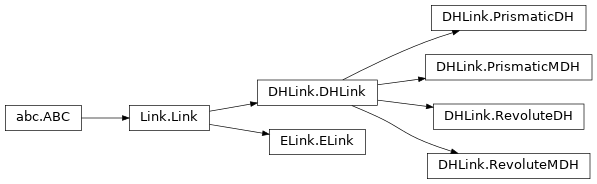

Superclasses¶
Robot¶
The various models ERobot models all subclass this class.
-
class
roboticstoolbox.robot.Robot.Robot(links, name='noname', manufacturer='', comment='', base=None, tool=None, gravity=None, keywords=(), symbolic=False)[source]¶ Bases:
roboticstoolbox.robot.Dynamics.DynamicsMixin,roboticstoolbox.robot.IK.IKMixin-
property
gravity¶ Get/set default gravitational acceleration (Robot superclass)
robot.nameis the default gravitational acceleration
- Returns
robot name
- Return type
ndarray(3,)
robot.name = ...checks and sets default gravitational acceleration
Note
If the z-axis is upward, out of the Earth, this should be a positive number.
-
__getitem__(i)[source]¶ Get link (Robot superclass)
- Parameters
i (int) – link number
- Returns
i’th link of robot
- Return type
Link subclass
This also supports iterating over each link in the robot object, from the base to the tool.
>>> import roboticstoolbox as rtb >>> robot = rtb.models.DH.Puma560() >>> print(robot[1]) # print the 2nd link RevoluteDH: theta=q2, d=0, a=0.4318, alpha=0.0 >>> print([link.a for link in robot]) # print all the a_j values [0, 0.4318, 0.0203, 0, 0, 0]
-
dynchanged()[source]¶ Dynamic parameters have changed (Robot superclass)
Called from a property setter to inform the robot that the cache of dynamic parameters is invalid.
- Seealso
roboticstoolbox.Link._listen_dyn()
-
property
n¶ Number of joints (Robot superclass)
- Returns
Number of joints
- Return type
int
Example:
>>> import roboticstoolbox as rtb >>> robot = rtb.models.DH.Puma560() >>> robot.n 6
-
addconfiguration(name, q, unit='rad')[source]¶ Add a named joint configuration (Robot superclass)
- Parameters
name (str) – Name of the joint configuration
q (ndarray(n) or list) – Joint configuration
Example:
>>> import roboticstoolbox as rtb >>> robot = rtb.models.DH.Puma560() >>> robot.qz array([0., 0., 0., 0., 0., 0.]) >>> robot.addconfiguration("mypos", [0.1, 0.2, 0.3, 0.4, 0.5, 0.6]) >>> robot.mypos array([0.1, 0.2, 0.3, 0.4, 0.5, 0.6])
-
linkcolormap(linkcolors='viridis')[source]¶ Create a colormap for robot joints
- Parameters
linkcolors (list or str, optional) – list of colors or colormap, defaults to “viridis”
- Returns
color map
- Return type
matplotlib.colors.ListedColormap
cm = robot.linkcolormap()is an n-element colormap that gives a unique color for every link. The RGBA colors for linkjarecm(j).cm = robot.linkcolormap(cmap)as above butcmapis the name of a valid matplotlib colormap. The default, example above, is theviridiscolormap.cm = robot.linkcolormap(list of colors)as above but a colormap is created from a list of n color names given as strings, tuples or hexstrings.
>>> import roboticstoolbox as rtb >>> robot = rtb.models.DH.Puma560() >>> cm = robot.linkcolormap("inferno") >>> print(cm(range(6))) # cm(i) is 3rd color in colormap [[0.0015 0.0005 0.0139 1. ] [0.2582 0.0386 0.4065 1. ] [0.5783 0.148 0.4044 1. ] [0.865 0.3168 0.2261 1. ] [0.9876 0.6453 0.0399 1. ] [0.9884 0.9984 0.6449 1. ]] >>> cm = robot.linkcolormap( ... ['red', 'g', (0,0.5,0), '#0f8040', 'yellow', 'cyan']) >>> print(cm(range(6))) [[1. 0. 0. 1. ] [0. 0.5 0. 1. ] [0. 0.5 0. 1. ] [0.0588 0.502 0.251 1. ] [1. 1. 0. 1. ] [0. 1. 1. 1. ]]
Note
Colormaps have 4-elements: red, green, blue, alpha (RGBA)
Names of supported colors and colormaps are defined in the matplotlib documentation.
-
manipulability(q=None, J=None, method='yoshikawa', axes='all', **kwargs)[source]¶ Manipulability measure
- Parameters
q (ndarray(n), or ndarray(m,n)) – Joint coordinates, one of J or q required
J (ndarray(6,n)) – Jacobian in world frame if already computed, one of J or q required
method (str) – method to use, “yoshikawa” (default), “condition”, “minsingular” or “asada”
axes (str) – Task space axes to consider: “all” [default], “trans” or “rot”
kwargs – extra arguments to pass to
jacob0
- Returns
manipulability
- Return type
float or ndarray(m)
manipulability(q)is the scalar manipulability index for the robot at the joint configurationq. It indicates dexterity, that is, how well conditioned the robot is for motion with respect to the 6 degrees of Cartesian motion. The values is zero if the robot is at a singularity.
Various measures are supported:
Measure
Description
"yoshikawa"Volume of the velocity ellipsoid, distance from singularity [Yoshikawa85]
"invcondition"Inverse condition number of Jacobian, isotropy of the velocity ellipsoid [Klein87]
"minsingular"Minimum singular value of the Jacobian, distance from singularity [Klein87]
"asada"Isotropy of the task-space acceleration ellipsoid which is a function of the Cartesian inertia matrix which depends on the inertial parameters [Asada83]
Trajectory operation:
If
qis a matrix (m,n) then the result (m,) is a vector of manipulability indices for each joint configuration specified by a row ofq.Note
Invokes the
jacob0method of the robot ifJis not passedThe “all” option includes rotational and translational dexterity, but this involves adding different units. It can be more useful to look at the translational and rotational manipulability separately.
Examples in the RVC book (1st edition) can be replicated by using the “all” option
Asada’s measure requires inertial a robot model with inertial parameters.
- References
- Yoshikawa85
Manipulability of Robotic Mechanisms. Yoshikawa T., The International Journal of Robotics Research. 1985;4(2):3-9. doi:10.1177/027836498500400201
- Asada83
A geometrical representation of manipulator dynamics and its application to arm design, H. Asada, Journal of Dynamic Systems, Measurement, and Control, vol. 105, p. 131, 1983.
- Klein87(1,2)
Dexterity Measures for the Design and Control of Kinematically Redundant Manipulators. Klein CA, Blaho BE. The International Journal of Robotics Research. 1987;6(2):72-83. doi:10.1177/027836498700600206
Robotics, Vision & Control, Chap 8, P. Corke, Springer 2011.
-
property
name¶ Get/set robot name (Robot superclass)
robot.nameis the robot name
- Returns
robot name
- Return type
str
robot.name = ...checks and sets therobot name
-
property
manufacturer¶ Get/set robot manufacturer’s name (Robot superclass)
robot.manufactureris the robot manufacturer’s name
- Returns
robot manufacturer’s name
- Return type
str
robot.manufacturer = ...checks and sets the manufacturer’s name
-
property
links¶ Robot links (Robot superclass)
- Returns
A list of link objects
- Return type
list of Link subclass instances
Note
It is probably more concise to index the robot object rather than the list of links, ie. the following are equivalent:
robot.links[i] robot[i]
-
property
base¶ Get/set robot base transform (Robot superclass)
robot.baseis the robot base transform
- Returns
robot tool transform
- Return type
SE3 instance
robot.base = ...checks and sets the robot base transform
Note
The private attribute
_basewill be None in the case of no base transform, but this property will returnSE3()which is an identity matrix.
-
property
tool¶ Get/set robot tool transform (Robot superclass)
robot.toolis the robot name
- Returns
robot tool transform
- Return type
SE3 instance
robot.tool = ...checks and sets the robot tool transform
Note
The private attribute
_toolwill be None in the case of no tool transform, but this property will returnSE3()which is an identity matrix.
-
property
qlim¶ Joint limits (Robot superclass)
- Returns
Array of joint limit values
- Return type
ndarray(2,n)
Example:
>>> import roboticstoolbox as rtb >>> robot = rtb.models.DH.Puma560() >>> robot.qlim array([[-2.7925, -1.9199, -2.3562, -4.6426, -1.7453, -4.6426], [ 2.7925, 1.9199, 2.3562, 4.6426, 1.7453, 4.6426]])
-
property
q¶ Get/set robot joint configuration (Robot superclass)
robot.qis the robot joint configuration
- Returns
robot joint configuration
- Return type
ndarray(n,)
robot.q = ...checks and sets the joint configuration
Note
???
-
property
qd¶ Get/set robot joint velocity (Robot superclass)
robot.qdis the robot joint velocity
- Returns
robot joint velocity
- Return type
ndarray(n,)
robot.qd = ...checks and sets the joint velocity
Note
???
-
property
qdd¶ Get/set robot joint acceleration (Robot superclass)
robot.qddis the robot joint acceleration
- Returns
robot joint acceleration
- Return type
ndarray(n,)
robot.qdd = ...checks and sets the robot joint acceleration
Note
???
-
accel(q, qd, torque)¶ Compute acceleration due to applied torque
- Parameters
q (ndarray(n)) – Joint coordinates
qd (ndarray(n)) – Joint velocity
torque (ndarray(n)) – Joint torques of the robot
- Returns
Joint accelerations of the robot
- Return type
ndarray(n)
qdd = accel(q, qd, torque)calculates a vector (n) of joint accelerations that result from applying the actuator force/torque (n) to the manipulator in state q (n) and qd (n), andnis the number of robot joints.\(\ddot{q} = \mathbf{I}^{-1} \left(\tau - \mathbf{C}(q)\dot{q} - \mathbf{g}(q)\right)\)
Example:
>>> import roboticstoolbox as rtb >>> puma = rtb.models.DH.Puma560() >>> puma.accel(puma.qz, 0.5 * np.ones(6), np.zeros(6)) array([ -7.5544, -12.22 , -6.4022, -5.4303, -4.9518, -2.1178])
Trajectory operation
If q, qd, torque are matrices (m,n) then
qddis a matrix (m,n) where each row is the acceleration corresponding to the equivalent cols of q, qd, torque.Note
Useful for simulation of manipulator dynamics, in conjunction with a numerical integration function.
Uses the method 1 of Walker and Orin to compute the forward dynamics.
Featherstone’s method is more efficient for robots with large numbers of joints.
Joint friction is considered.
- References
Efficient dynamic computer simulation of robotic mechanisms, M. W. Walker and D. E. Orin, ASME Journa of Dynamic Systems, Measurement and Control, vol. 104, no. 3, pp. 205-211, 1982.
-
cinertia(q=None)¶ Cartesian manipulator inertia matrix
- Parameters
q (ndarray(n)) – Joint coordinates
- Returns
The inertia matrix
- Return type
ndarray(6,6)
robot.cinertia(q)is the Cartesian (operational space) inertia matrix which relates Cartesian force/torque to Cartesian acceleration at the joint configuration q.:math:`mathbf{M} = {mathbf{J}(q)^+}^T mathbf{I}(q) mathbf{J}(q)^+
Example:
>>> import roboticstoolbox as rtb >>> puma = rtb.models.DH.Puma560() >>> puma.cinertia(puma.qz) array([[ 6.2736, -1.3785, 4.2076, 0. , -0.3925, 0. ], [-1.3785, 20.0685, -1.5182, 0. , 0.1312, -0.2119], [ 4.2076, -1.5182, 24.9384, 0. , 0. , 0. ], [ 0. , 0. , 0. , 0. , -0. , -0. ], [-0.3925, 0.1312, 0. , -0. , 0.1713, -0. ], [ 0. , -0.2119, 0. , -0. , -0. , 0.0967]])
Trajectory operation
If
qis a matrix (m,n), each row is interpretted as a joint state vector, and the result is a 3d-matrix (n,n,m) where each plane corresponds to the Cartesian inertia for the corresponding row ofq.Warning
Assumes that the operational space has 6 DOF.
- Seealso
-
coriolis(q, qd)¶ Coriolis and centripetal term
- Parameters
q (ndarray(n)) – Joint coordinates
qd (ndarray(n)) – Joint velocity
- Returns
Velocity matrix
- Return type
ndarray(n,n)
coriolis(q, qd)calculates the Coriolis/centripetal matrix (n,n) for the robot in configurationqand velocityqd, wherenis the number of joints.The product \(\mathbf{C} \dot{q}\) is the vector of joint force/torque due to velocity coupling. The diagonal elements are due to centripetal effects and the off-diagonal elements are due to Coriolis effects. This matrix is also known as the velocity coupling matrix, since it describes the disturbance forces on any joint due to velocity of all other joints.
Example:
>>> import roboticstoolbox as rtb >>> puma = rtb.models.DH.Puma560() >>> puma.coriolis(puma.qz, 0.5 * np.ones((6,))) array([[-0.4017, -0.5513, -0.2025, -0.0007, -0.0013, 0. ], [ 0.2023, -0.1937, -0.3868, -0. , -0.002 , 0. ], [ 0.1987, 0.193 , -0. , 0. , -0.0001, 0. ], [ 0. , 0. , 0. , 0. , 0. , 0. ], [ 0.0007, 0.0007, 0.0001, 0. , 0. , 0. ], [ 0. , 0. , 0. , 0. , 0. , 0. ]])
Trajectory operation
If
qand qd are matrices (m,n), each row is interpretted as a joint configuration, and the result (n,n,m) is a 3d-matrix where each plane corresponds to a row ofqandqd.Note
Joint viscous friction is also a joint force proportional to velocity but it is eliminated in the computation of this value.
Computationally slow, involves \(n^2/2\) invocations of RNE.
-
dyntable()¶ Pretty print the dynamic parameters (Robot superclass)
The dynamic parameters are printed in a table, with one row per link.
Example:
-
fdyn(T, q0, torqfun=None, targs=None, qd0=None, solver='RK45', sargs=None, dt=None, progress=False)¶ Integrate forward dynamics
- Parameters
T (float) – integration time
q0 (array_like) – initial joint coordinates
qd0 (array_like) – initial joint velocities, assumed zero if not given
torqfun – a function that computes torque as a function of time
and/or state :type torqfun: callable :param targs: argumments passed to
torqfun:type targs: dict :type solver: name of scipy solver to use, RK45 is the default :param solver: str :type sargs: arguments passed to the solver :param sargs: dict :type dt: time step for results :param dt: float :param progress: show progress bar, default False :type progress: bool- Returns
robot trajectory
- Return type
namedtuple
tg = R.fdyn(T, q)integrates the dynamics of the robot with zero input torques over the time interval 0 toTand returns the trajectory as a namedtuple with elements:tthe time vector (M,)qthe joint coordinates (M,n)qdthe joint velocities (M,n)
tg = R.fdyn(T, q, torqfun)as above but the torque applied to the joints is given by the provided function:tau = function(robot, t, q, qd, **args)
where the inputs are:
the robot object
current time
current joint coordinates (n,)
current joint velocity (n,)
args, optional keyword arguments can be specified, these are passed in from the
targskewyword argument.
The function must return a Numpy array (n,) of joint forces/torques.
Examples:
to apply zero joint torque to the robot without Coulomb friction:
def myfunc(robot, t, q, qd): return np.zeros((robot.n,)) tg = robot.nofriction().fdyn(5, q0, myfunc) plt.figure() plt.plot(tg.t, tg.q) plt.show()
We could also use a lambda function:
tg = robot.nofriction().fdyn( 5, q0, lambda r, t, q, qd: np.zeros((r.n,)))
the robot is controlled by a PD controller. We first define a function to compute the control which has additional parameters for the setpoint and control gains (qstar, P, D):
def myfunc(robot, t, q, qd, qstar, P, D): return (qstar - q) * P + qd * D # P, D are (6,) targs = {'qstar': VALUE, 'P': VALUE, 'D': VALUE} tg = robot.fdyn(10, q0, myfunc, targs=targs) )
Many integrators have variable step length which is problematic if we want to animate the result. If
dtis specified then the solver results are interpolated in time steps ofdt.Note
This function performs poorly with non-linear joint friction,
such as Coulomb friction. The R.nofriction() method can be used to set this friction to zero. - If the function is not specified then zero force/torque is applied to the manipulator joints. - Interpolation is performed using ScipY integrate.ode <https://docs.scipy.org/doc/scipy/reference/generated/scipy.integrate.ode.html> - The SciPy RK45 integrator is used by default - Interpolation is performed using SciPy interp1 <https://docs.scipy.org/doc/scipy/reference/generated/scipy.interpolate.interp1d.html>
- Seealso
DHRobot.accel(),DHRobot.nofriction(),DHRobot.rne().
-
friction(qd)¶ Manipulator joint friction (Robot superclass)
- Parameters
qd (ndarray(n)) – The joint velocities of the robot
- Returns
The joint friction forces/torques for the robot
- Return type
ndarray(n,)
robot.friction(qd)is a vector of joint friction forces/torques for the robot moving with joint velocitiesqd.The friction model includes:
Viscous friction which is a linear function of velocity.
Coulomb friction which is proportional to sign(qd).
\[\begin{split}\tau_j = G^2 B \dot{q}_j + |G_j| \left\{ \begin{array}{ll} \tau_{C,j}^+ & \mbox{if $\dot{q}_j > 0$} \\ \tau_{C,j}^- & \mbox{if $\dot{q}_j < 0$} \end{array} \right.\end{split}\]Note
The friction value should be added to the motor output torque to determine the nett torque. It has a negative value when qd > 0.
The returned friction value is referred to the output of the gearbox.
The friction parameters in the Link object are referred to the motor.
Motor viscous friction is scaled up by \(G^2\).
Motor Coulomb friction is scaled up by math:G.
The appropriate Coulomb friction value to use in the non-symmetric case depends on the sign of the joint velocity, not the motor velocity.
Coulomb friction is zero for zero joint velocity, stiction is not modeled.
The absolute value of the gear ratio is used. Negative gear ratios are tricky: the Puma560 robot has negative gear ratio for joints 1 and 3.
The absolute value of the gear ratio is used. Negative gear ratios are tricky: the Puma560 has negative gear ratio for joints 1 and 3.
- Seealso
Robot.nofriction(),Link.friction()
-
gravload(q=None, gravity=None)¶ Compute gravity load
- Parameters
q (ndarray(n)) – Joint coordinates
gravity (ndarray(3)) – Gravitational acceleration (Optional, if not supplied will use the stored gravity values).
- Returns
The generalised joint force/torques due to gravity
- Return type
ndarray(n)
robot.gravload(q)calculates the joint gravity loading (n) for the robot in the joint configurationqand using the default gravitational acceleration specified in the DHRobot object.robot.gravload(q, gravity=g)as above except the gravitational acceleration is explicitly specified asg.Example:
>>> import roboticstoolbox as rtb >>> puma = rtb.models.DH.Puma560() >>> puma.gravload(puma.qz) array([ 0. , 37.4837, 0.2489, 0. , 0. , 0. ])
Trajectory operation
If q is a matrix (nxm) each column is interpreted as a joint configuration vector, and the result is a matrix (nxm) each column being the corresponding joint torques.
-
ikine_LM(T, q0=None, mask=None, ilimit=500, rlimit=100, tol=1e-10, L=0.1, Lmin=0, search=False, slimit=100, transpose=None)¶ Numerical inverse kinematics by Levenberg-Marquadt optimization (Robot superclass)
- Parameters
T (SE3) – The desired end-effector pose or pose trajectory
q0 (ndarray(n)) – initial joint configuration (default all zeros)
mask (ndarray(6)) – mask vector that correspond to translation in X, Y and Z and rotation about X, Y and Z respectively.
ilimit (int) – maximum number of iterations (default 500)
rlimit (int) – maximum number of consecutive step rejections (default 100)
tol (float) – final error tolerance (default 1e-10)
L (float (default 0.1)) – initial value of lambda
Lmin (float (default 0)) – minimum allowable value of lambda
search (bool) – search over all configurations
slimit (int (default 100)) – maximum number of search attempts
transpose (float) – use Jacobian transpose with step size A, rather than Levenberg-Marquadt
- Returns
inverse kinematic solution
- Return type
named tuple
sol = robot.ikine_LM(T)are the joint coordinates (n) corresponding to the robot end-effector poseTwhich is anSE3object. This method can be used for robots with any number of degrees of freedom. The return valuesolis a named tuple with elements:Trajectory operation:
If
len(T) > 1it is considered to be a trajectory, and the result is a list of named tuples such thatsol[k]corresponds toT[k]. The initial estimate of q for each time step is taken as the solution from the previous time step.Underactuated robots:
For the case where the manipulator has fewer than 6 DOF the solution space has more dimensions than can be spanned by the manipulator joint coordinates.
In this case we specify the
maskoption where themaskvector (6) specifies the Cartesian DOF (in the wrist coordinate frame) that will be ignored in reaching a solution. The mask vector has six elements that correspond to translation in X, Y and Z, and rotation about X, Y and Z respectively. The value should be 0 (for ignore) or 1. The number of non-zero elements must equal the number of manipulator DOF.For example when using a 3 DOF manipulator tool orientation might be unimportant, in which case use the option
mask=[1 1 1 0 0 0].Global search:
sol = robot.ikine_LM(T, search=True)as above but peforms a brute-force search with initial conditions chosen randomly from the entire configuration space. If a numerical solution is found from that initial condition, it is returned, otherwise another initial condition is chosen.Note
Implements a Levenberg-Marquadt variable-step-size solver.
The tolerance is computed on the norm of the error between current and desired tool pose. This norm is computed from distances and angles without any kind of weighting.
The inverse kinematic solution is generally not unique, and depends on the initial guess
q0.The default value of
q0is zero which is a poor choice for most manipulators since it often corresponds to a kinematic singularity.Such a solution is completely general, though much less efficient than analytic inverse kinematic solutions derived symbolically.
This approach allows a solution to be obtained at a singularity, but the joint angles within the null space are arbitrarily assigned.
Joint offsets, if defined, are accounted for in the solution.
Joint limits are not considered in this solution.
If the search option is used any prismatic joint must have joint limits defined.
- References
Robotics, Vision & Control, P. Corke, Springer 2011, Section 8.4.
- Seealso
ikine_LMS(),ikine_unc(),ikine_con(),ikine_min()
-
ikine_LMS(T, q0=None, mask=None, ilimit=500, tol=1e-10, wN=0.001, Lmin=0)¶ Numerical inverse kinematics by Levenberg-Marquadt optimization (Robot superclass)
- Parameters
T (SE3) – The desired end-effector pose or pose trajectory
q0 (ndarray(n)) – initial joint configuration (default all zeros)
mask (ndarray(6)) – mask vector that correspond to translation in X, Y and Z and rotation about X, Y and Z respectively.
ilimit (int) – maximum number of iterations (default 500)
tol (float) – final error tolerance (default 1e-10)
ωN (float (default 1e-3)) – damping coefficient
- Returns
inverse kinematic solution
- Return type
named tuple
sol = robot.ikine_LM(T)are the joint coordinates (n) corresponding to the robot end-effector poseTwhich is anSE3object. This method can be used for robots with any number of degrees of freedom. The return valuesolis a named tuple with elements:Trajectory operation:
If
len(T) > 1it is considered to be a trajectory, and the result is a list of named tuples such thatsol[k]corresponds toT[k]. The initial estimate of q for each time step is taken as the solution from the previous time step.Underactuated robots:
For the case where the manipulator has fewer than 6 DOF the solution space has more dimensions than can be spanned by the manipulator joint coordinates.
In this case we specify the
maskoption where themaskvector (6) specifies the Cartesian DOF (in the wrist coordinate frame) that will be ignored in reaching a solution. The mask vector has six elements that correspond to translation in X, Y and Z, and rotation about X, Y and Z respectively. The value should be 0 (for ignore) or 1. The number of non-zero elements should equal the number of manipulator DOF.For example when using a 3 DOF manipulator rotation orientation might be unimportant in which case use the option: mask = [1 1 1 0 0 0].
Note
Implements a modified Levenberg-Marquadt variable-step-size solver which is quite robust in practice.
The tolerance is computed on the norm of the error between current and desired tool pose. This norm is computed from distances and angles without any kind of weighting.
The inverse kinematic solution is generally not unique, and depends on the initial guess
q0.The default value of
q0is zero which is a poor choice for most manipulators since it often corresponds to a kinematic singularity.Such a solution is completely general, though much less efficient than analytic inverse kinematic solutions derived symbolically.
This approach allows a solution to be obtained at a singularity, but the joint angles within the null space are arbitrarily assigned.
Joint offsets, if defined, are accounted for in the solution.
Joint limits are not considered in this solution.
- References
“Solvability-Unconcerned Inverse Kinematics by the Levenberg–Marquardt Method”, T. Sugihara, IEEE T-RO, 27(5), October 2011, pp. 984-991.
- Seealso
ikine_LM(),ikine_unc(),ikine_con(),ikine_min()
-
ikine_global(T, qlim=False, ilimit=1000, tol=1e-16, method=None, options={})¶ Warning
Experimental code for using SciPy global optimizers.
Each global optimizer has quite a different call signature, so final design will need a bit of thought.
-
ikine_min(T, q0=None, qlim=False, ilimit=1000, tol=1e-16, method=None, stiffness=0, costfun=None, options={})¶ Inverse kinematics by optimization with joint limits (Robot superclass)
- Parameters
T (SE3) – The desired end-effector pose or pose trajectory
q0 (ndarray(n)) – initial joint configuration (default all zeros)
qlim (bool) – enforce joint limits
ilimit (int) – Iteration limit (default 1000)
tol (tol) – Tolerance (default 1e-16)
method (str) – minimization method to use
stiffness (float) – Stiffness used to impose a smoothness contraint on joint angles, useful when n is large (default 0)
costfun (callable) – User supplied cost term, optional
- Returns
inverse kinematic solution
- Return type
named tuple
sol = robot.ikine_min(T)are the joint coordinates (n) corresponding to the robot end-effector pose T which is an SE3 object. The return valuesolis a named tuple with elements:Minimization method:
By default this method uses:
the Scipy
SLSQP(Sequential Least Squares Programming) minimizer for the case of no joint limitsthe Scipy
trust-constrminimizer for the case with joint limits. This gives good results but is very slow. An alternative isL-BFGS-B(Broyden–Fletcher–Goldfarb–Shanno) but for redundant robots can sometimes give poor results, pushing against the joint limits when there is no need to.
In both case the function to be minimized is the squared norm of a vector \([d,a]\) with components respectively the translation error and rotation error in Euler vector form, between the desired pose and the current estimate obtained by inverse kinematics.
Additional cost terms:
This method supports two additional costs:
stiffnessimposes a penalty on joint variation \(\sum_{j=1}^N (q_j - q_{j-1})^2\) which tends to keep the arm straightcostfunadd a cost given by a user-specified functioncostfun(q)
Trajectory operation:
If
len(T) > 1it is considered to be a trajectory, and the result is a list of named tuples such thatsol[k]corresponds toT[k]. The initial estimate of q for each time step is taken as the solution from the previous time step.Note
Uses
SciPy.minimizewith bounds.Joint limits are considered in this solution.
Can be used for robots with arbitrary degrees of freedom.
The inverse kinematic solution is generally not unique, and depends on the initial guess
q0.The default value of
q0is zero which is a poor choice for most manipulators since it often corresponds to a kinematic singularity.Such a solution is completely general, though much less efficient than analytic inverse kinematic solutions derived symbolically.
The objective function (error) is \(\sum \left( (\mat{T}^{-1} \cal{K}(\vec{q}) - \mat{1} ) \mat{\Omega} \right)^2\) where \(\mat{\Omega}\) is a diagonal matrix.
Joint offsets, if defined, are accounted for in the solution.
Warning
The objective function is rather uncommon.
Order of magnitude slower than
ikine_LMorikine_LMS, it uses a scalar cost-function and does not provide a Jacobian.
- Author
Bryan Moutrie, for RTB-MATLAB
- Seealso
ikine_LM(),ikine_LMS(),ikine_unc(),ikine_min()
-
ikine_mmc(T, q0=None)¶
-
inertia(q=None)¶ DHRobot.INERTIA Manipulator inertia matrix
- Parameters
q (ndarray(n)) – Joint coordinates
- Returns
The inertia matrix
- Return type
ndarray(n,n)
inertia(q)is the symmetric joint inertia matrix (n,n) which relates joint torque to joint acceleration for the robot at joint configuration q.Example:
>>> import roboticstoolbox as rtb >>> puma = rtb.models.DH.Puma560() >>> puma.inertia(puma.qz) array([[ 3.9611, -0.1627, -0.1389, 0.0016, -0.0004, 0. ], [-0.1627, 4.4566, 0.3727, 0. , 0.0019, 0. ], [-0.1389, 0.3727, 0.9387, 0. , 0.0019, 0. ], [ 0.0016, 0. , 0. , 0.1924, 0. , 0. ], [-0.0004, 0.0019, 0.0019, 0. , 0.1713, 0. ], [ 0. , 0. , 0. , 0. , 0. , 0.1941]])
Trajectory operation
If
qis a matrix (m,n), each row is interpretted as a joint state vector, and the result is a 3d-matrix (nxnxk) where each plane corresponds to the inertia for the corresponding row of q.Note
The diagonal elements
I[j,j]are the inertia seen by joint actuatorj.The off-diagonal elements
I[j,k]are coupling inertias that relate acceleration on jointjto force/torque on jointk.The diagonal terms include the motor inertia reflected through the gear ratio.
- Seealso
-
itorque(q, qdd)¶ Inertia torque
- Parameters
q (ndarray(n)) – Joint coordinates
qdd (ndarray(n)) – Joint acceleration
- Returns
The inertia torque vector
- Return type
ndarray(n)
itorque(q, qdd)is the inertia force/torque vector (n) at the specified joint configuration q (n) and acceleration qdd (n), andnis the number of robot joints. It is \(\mathbf{I}(q) \ddot{q}\).Example:
>>> import roboticstoolbox as rtb >>> puma = rtb.models.DH.Puma560() >>> puma.itorque(puma.qz, 0.5 * np.ones((6,))) array([1.8304, 2.3343, 0.5872, 0.0971, 0.0873, 0.0971])
Trajectory operation
If
qandqddare matrices (m,n), each row is interpretted as a joint configuration, and the result is a matrix (m,n) where each row is the corresponding joint torques.Note
If the robot model contains non-zero motor inertia then this will be included in the result.
- Seealso
-
jointdynamics(q, qd=None)¶ Transfer function of joint actuator
- Parameters
q (ndarray(n)) – Joint coordinates
qd (ndarray(n)) – Joint velocity
- Returns
transfer function denominators
- Return type
list of 2-tuples
tf = jointdynamics(qd, q)calculates a vector of n continuous-time transfer functions that represent the transfer function 1/(Js+B) for each joint based on the dynamic parameters of the robot and the configuration q (n). n is the number of robot joints.tf = jointdynamics(q, qd)as above but include the linearized effects of Coulomb friction when operating at joint velocity QD (1xN).
-
nofriction(coulomb=True, viscous=False)¶ Remove manipulator joint friction (Robot superclass)
- Parameters
coulomb (bool) – set the Coulomb friction to 0
viscous (bool) – set the viscous friction to 0
- Returns
A copy of the robot with dynamic parameters perturbed
- Return type
Robot subclass
nofriction()copies the robot and returns a robot with the same link parameters except the Coulomb and/or viscous friction parameter are set to zero.- Seealso
Robot.friction(),Link.nofriction()
-
pay(W, q=None, J=None, frame=1)¶ tau = pay(W, J) Returns the generalised joint force/torques due to a payload wrench W applied to the end-effector. Where the manipulator Jacobian is J (6xn), and n is the number of robot joints.
tau = pay(W, q, frame) as above but the Jacobian is calculated at pose q in the frame given by frame which is 0 for base frame, 1 for end-effector frame.
Uses the formula tau = J’W, where W is a wrench vector applied at the end effector, W = [Fx Fy Fz Mx My Mz]’.
- Trajectory operation:
In the case q is nxm or J is 6xnxm then tau is nxm where each row is the generalised force/torque at the pose given by corresponding row of q.
- Parameters
W (ndarray(6)) – A wrench vector applied at the end effector, W = [Fx Fy Fz Mx My Mz]
q (ndarray(n)) – Joint coordinates
J (ndarray(6,n)) – The manipulator Jacobian (Optional, if not supplied will use the q value).
frame (int) – The frame in which to torques are expressed in when J is not supplied. 0 means base frame of the robot, 1 means end- effector frame
- Returns
Joint forces/torques due to w
- Return type
ndarray(n)
Note
Wrench vector and Jacobian must be from the same reference frame.
Tool transforms are taken into consideration when frame=1.
Must have a constant wrench - no trajectory support for this yet.
-
paycap(w, tauR, frame=1, q=None)¶ Static payload capacity of a robot
- Parameters
w (ndarray(n)) – The payload wrench
tauR (ndarray(n,2)) – Joint torque matrix minimum and maximums
frame (str) – The frame in which to torques are expressed in when J is not supplied. ‘base’ means base frame of the robot, ‘ee’ means end-effector frame
q (ndarray(n)) – Joint coordinates
- Returns
The maximum permissible payload wrench
- Return type
ndarray(6)
- Returns
Joint index (zero indexed) which hits its force/torque limit
- Return type
int
wmax, joint = paycap(q, w, f, tauR)returns the maximum permissible payload wrenchwmax(6) applied at the end-effector, and the index of the joint (zero indexed) which hits its force/torque limit at that wrench.q(n) is the manipulator pose,wthe payload wrench (6),fthe wrench reference frame and tauR (nx2) is a matrix of joint forces/torques (first col is maximum, second col minimum).Trajectory operation:
In the case q is nxm then wmax is Mx6 and J is Mx1 where the rows are the results at the pose given by corresponding row of q.
Note
Wrench vector and Jacobian must be from the same reference frame
Tool transforms are taken into consideration for frame=1.
-
payload(m, p=array([0.0, 0.0, 0.0]))¶ payload(m, p) adds payload mass adds a payload with point mass m at position p in the end-effector coordinate frame.
payload(m) adds payload mass adds a payload with point mass m at in the end-effector coordinate frame.
payload(0) removes added payload.
- Parameters
m (float) – mass (kg)
p (ndarray(3,1)) – position in end-effector frame
-
perturb(p=0.1)¶ Perturb robot parameters
rp = perturb(p) is a new robot object in which the dynamic parameters (link mass and inertia) have been perturbed. The perturbation is multiplicative so that values are multiplied by random numbers in the interval (1-p) to (1+p). The name string of the perturbed robot is prefixed by ‘P/’.
Useful for investigating the robustness of various model-based control schemes. For example to vary parameters in the range +/- 10 percent is: r2 = puma.perturb(0.1)
- Parameters
p (float) – The percent (+/-) to be perturbed. Default 10%
- Returns
A copy of the robot with dynamic parameters perturbed
- Return type
-
printdyn()¶ Print dynamic parameters
Display the kinematic and dynamic parameters to the console in reable format
-
property
control_type¶ Get/set robot control mode (Robot superclass)
robot.control_typeis the robot control mode
- Returns
robot control mode
- Return type
ndarray(n,)
robot.control_type = ...checks and sets the robot control mode
Note
???
-
plot(q, backend=None, block=True, dt=0.05, limits=None, vellipse=False, fellipse=False, jointaxes=True, eeframe=True, shadow=True, name=True, movie=None)[source]¶ Graphical display and animation
- Parameters
q (float ndarray(n)) – The joint configuration of the robot.
backend (string) – The graphical backend to use, currently ‘swift’ and ‘pyplot’ are implemented. Defaults to ‘swift’ of an
ERobotand ‘pyplot` for aDHRobotblock (bool) – Block operation of the code and keep the figure open
dt (float) – if q is a trajectory, this describes the delay in seconds between frames
limits (ndarray(6)) – Custom view limits for the plot. If not supplied will autoscale, [x1, x2, y1, y2, z1, z2] (this option is for ‘pyplot’ only)
vellipse (bool) – (Plot Option) Plot the velocity ellipse at the end-effector (this option is for ‘pyplot’ only)
vellipse – (Plot Option) Plot the force ellipse at the end-effector (this option is for ‘pyplot’ only)
jointaxes (bool) – (Plot Option) Plot an arrow indicating the axes in which the joint revolves around(revolute joint) or translates along (prosmatic joint) (this option is for ‘pyplot’ only)
eeframe (bool) – (Plot Option) Plot the end-effector coordinate frame at the location of the end-effector. Uses three arrows, red, green and blue to indicate the x, y, and z-axes. (this option is for ‘pyplot’ only)
shadow (bool) – (Plot Option) Plot a shadow of the robot in the x-y plane. (this option is for ‘pyplot’ only)
name (bool) – (Plot Option) Plot the name of the robot near its base (this option is for ‘pyplot’ only)
movie (str) – name of file in which to save an animated GIF (this option is for ‘pyplot’ only)
- Returns
A reference to the environment object which controls the figure
- Return type
robot.plot(q, 'pyplot')displays a graphical view of a robot based on the kinematic model and the joint configurationq. This is a stick figure polyline which joins the origins of the link coordinate frames. The plot will autoscale with an aspect ratio of 1.
If
q(m,n) representing a joint-space trajectory it will create an animation with a pause ofdtseconds between each frame.Note
By default this method will block until the figure is dismissed. To avoid this set
block=False.For PyPlot, the polyline joins the origins of the link frames, but for some Denavit-Hartenberg models those frames may not actually be on the robot, ie. the lines to not neccessarily represent the links of the robot.
- Seealso
-
fellipse(q=None, opt='trans', centre=[0, 0, 0])[source]¶ Create a force ellipsoid object for plotting with PyPlot
- Parameters
q (float ndarray(n)) – The joint configuration of the robot (Optional, if not supplied will use the stored q values).
opt (string) – ‘trans’ or ‘rot’ will plot either the translational or rotational force ellipsoid
centre (list or str('ee')) –
- Returns
An EllipsePlot object
- Return type
EllipsePlot
robot.fellipse(q)creates a force ellipsoid for the robot at poseq. The ellipsoid is centered at the origin.robot.fellipse()as above except the joint configuration is that stored in the robot object.
Note
By default the ellipsoid related to translational motion is drawn. Use
opt='rot'to draw the rotational velocity ellipsoid.By default the ellipsoid is drawn at the origin. The option
centreallows its origin to set to set to the specified 3-vector, or the string “ee” ensures it is drawn at the end-effector position.
-
vellipse(q=None, opt='trans', centre=[0, 0, 0])[source]¶ Create a velocity ellipsoid object for plotting with PyPlot
- Parameters
q (float ndarray(n)) – The joint configuration of the robot (Optional, if not supplied will use the stored q values).
opt (string) – ‘trans’ or ‘rot’ will plot either the translational or rotational velocity ellipsoid
centre (list or str('ee')) –
- Returns
An EllipsePlot object
- Return type
EllipsePlot
robot.vellipse(q)creates a force ellipsoid for the robot at poseq. The ellipsoid is centered at the origin.robot.vellipse()as above except the joint configuration is that stored in the robot object.
Note
By default the ellipsoid related to translational motion is drawn. Use
opt='rot'to draw the rotational velocity ellipsoid.By default the ellipsoid is drawn at the origin. The option
centreallows its origin to set to set to the specified 3-vector, or the string “ee” ensures it is drawn at the end-effector position.
-
plot_ellipse(ellipse, block=True, limits=None, jointaxes=True, eeframe=True, shadow=True, name=True)[source]¶ Plot the an ellipsoid
- Parameters
block (bool) – Block operation of the code and keep the figure open
ellipse (EllipsePlot) – the ellipsoid to plot
jointaxes (bool) – (Plot Option) Plot an arrow indicating the axes in which the joint revolves around(revolute joint) or translates along (prosmatic joint)
eeframe (bool) – (Plot Option) Plot the end-effector coordinate frame at the location of the end-effector. Uses three arrows, red, green and blue to indicate the x, y, and z-axes.
shadow (bool) – (Plot Option) Plot a shadow of the robot in the x-y plane
name (bool) – (Plot Option) Plot the name of the robot near its base
- Returns
A reference to the PyPlot object which controls the matplotlib figure
- Return type
robot.plot_ellipse(ellipsoid)displays the ellipsoid.
Note
By default the ellipsoid is drawn at the origin. The option
centreallows its origin to set to set to the specified 3-vector, or the string “ee” ensures it is drawn at the end-effector position.
-
plot_fellipse(q=None, block=True, fellipse=None, limits=None, opt='trans', centre=[0, 0, 0], jointaxes=True, eeframe=True, shadow=True, name=True)[source]¶ Plot the force ellipsoid for manipulator
- Parameters
block (bool) – Block operation of the code and keep the figure open
q (float ndarray(n)) – The joint configuration of the robot (Optional, if not supplied will use the stored q values).
fellipse (EllipsePlot) – the vellocity ellipsoid to plot
limits (ndarray(6)) – Custom view limits for the plot. If not supplied will autoscale, [x1, x2, y1, y2, z1, z2]
opt (string) – ‘trans’ or ‘rot’ will plot either the translational or rotational force ellipsoid
centre (array_like or str) – The coordinates to plot the fellipse [x, y, z] or “ee” to plot at the end-effector location
jointaxes (bool) – (Plot Option) Plot an arrow indicating the axes in which the joint revolves around(revolute joint) or translates along (prosmatic joint)
eeframe (bool) – (Plot Option) Plot the end-effector coordinate frame at the location of the end-effector. Uses three arrows, red, green and blue to indicate the x, y, and z-axes.
shadow (bool) – (Plot Option) Plot a shadow of the robot in the x-y plane
name (bool) – (Plot Option) Plot the name of the robot near its base
- Returns
A reference to the PyPlot object which controls the matplotlib figure
- Return type
robot.plot_fellipse(q)displays the velocity ellipsoid for the robot at poseq. The plot will autoscale with an aspect ratio of 1.plot_fellipse()as above except the robot is plotted with joint coordinates stored in the robot object.robot.plot_fellipse(vellipse)specifies a custon ellipse to plot.
Note
By default the ellipsoid related to translational motion is drawn. Use
opt='rot'to draw the rotational velocity ellipsoid.By default the ellipsoid is drawn at the origin. The option
centreallows its origin to set to set to the specified 3-vector, or the string “ee” ensures it is drawn at the end-effector position.
-
plot_vellipse(q=None, block=True, vellipse=None, limits=None, opt='trans', centre=[0, 0, 0], jointaxes=True, eeframe=True, shadow=True, name=True)[source]¶ Plot the velocity ellipsoid for manipulator
- Parameters
block (bool) – Block operation of the code and keep the figure open
q (float ndarray(n)) – The joint configuration of the robot (Optional, if not supplied will use the stored q values).
vellipse (EllipsePlot) – the vellocity ellipsoid to plot
limits (ndarray(6)) – Custom view limits for the plot. If not supplied will autoscale, [x1, x2, y1, y2, z1, z2]
opt (string) – ‘trans’ or ‘rot’ will plot either the translational or rotational velocity ellipsoid
centre (array_like or str) – The coordinates to plot the vellipse [x, y, z] or “ee” to plot at the end-effector location
jointaxes (bool) – (Plot Option) Plot an arrow indicating the axes in which the joint revolves around(revolute joint) or translates along (prosmatic joint)
eeframe (bool) – (Plot Option) Plot the end-effector coordinate frame at the location of the end-effector. Uses three arrows, red, green and blue to indicate the x, y, and z-axes.
shadow (bool) – (Plot Option) Plot a shadow of the robot in the x-y plane
name (bool) – (Plot Option) Plot the name of the robot near its base
- Returns
A reference to the PyPlot object which controls the matplotlib figure
- Return type
robot.plot_vellipse(q)displays the velocity ellipsoid for the robot at poseq. The plot will autoscale with an aspect ratio of 1.plot_vellipse()as above except the robot is plotted with joint coordinates stored in the robot object.robot.plot_vellipse(vellipse)specifies a custon ellipse to plot.
Note
By default the ellipsoid related to translational motion is drawn. Use
opt='rot'to draw the rotational velocity ellipsoid.By default the ellipsoid is drawn at the origin. The option
centreallows its origin to set to set to the specified 3-vector, or the string “ee” ensures it is drawn at the end-effector position.
-
plot2(q, block=True, dt=0.05, limits=None, vellipse=False, fellipse=False, eeframe=True, name=False)[source]¶ 2D Graphical display and animation
- Parameters
block (bool) – Block operation of the code and keep the figure open
q (float ndarray(n)) – The joint configuration of the robot (Optional, if not supplied will use the stored q values).
dt (int) – if q is a trajectory, this describes the delay in milliseconds between frames
limits (ndarray(6)) – Custom view limits for the plot. If not supplied will autoscale, [x1, x2, y1, y2, z1, z2]
vellipse (bool) – (Plot Option) Plot the velocity ellipse at the end-effector
vellipse – (Plot Option) Plot the force ellipse at the end-effector
eeframe (bool) – (Plot Option) Plot the end-effector coordinate frame at the location of the end-effector. Uses three arrows, red, green and blue to indicate the x, y, and z-axes.
name (bool) – (Plot Option) Plot the name of the robot near its base
- Returns
A reference to the PyPlot object which controls the matplotlib figure
- Return type
robot.plot2(q)displays a 2D graphical view of a robot based on the kinematic model and the joint configurationq. This is a stick figure polyline which joins the origins of the link coordinate frames. The plot will autoscale with an aspect ratio of 1.
If
q(m,n) representing a joint-space trajectory it will create an animation with a pause ofdtseconds between each frame.Note
By default this method will block until the figure is dismissed. To avoid this set
block=False.The polyline joins the origins of the link frames, but for some Denavit-Hartenberg models those frames may not actually be on the robot, ie. the lines to not neccessarily represent the links of the robot.
- Seealso
-
teach(q=None, block=True, order='xyz', limits=None, jointaxes=True, eeframe=True, shadow=True, name=True)[source]¶ Graphical teach pendant
- Parameters
block (bool) – Block operation of the code and keep the figure open
q (float ndarray(n)) – The joint configuration of the robot (Optional, if not supplied will use the stored q values).
limits (ndarray(6)) – Custom view limits for the plot. If not supplied will autoscale, [x1, x2, y1, y2, z1, z2]
jointaxes (bool) – (Plot Option) Plot an arrow indicating the axes in which the joint revolves around(revolute joint) or translates along (prismatic joint)
eeframe (bool) – (Plot Option) Plot the end-effector coordinate frame at the location of the end-effector. Uses three arrows, red, green and blue to indicate the x, y, and z-axes.
shadow (bool) – (Plot Option) Plot a shadow of the robot in the x-y plane
name (bool) – (Plot Option) Plot the name of the robot near its base
- Returns
A reference to the PyPlot object which controls the matplotlib figure
- Return type
robot.teach(q)creates a matplotlib plot which allows the user to “drive” a graphical robot using a graphical slider panel. The robot’s inital joint configuration isq. The plot will autoscale with an aspect ratio of 1.robot.teach()as above except the robot’s stored value ofqis used.
Note
Program execution is blocked until the teach window is dismissed. If
block=Falsethe method is non-blocking but you need to poll the window manager to ensure that the window remains responsive.The slider limits are derived from the joint limit properties. If not set then:
For revolute joints they are assumed to be [-pi, +pi]
For prismatic joint they are assumed unknown and an error occurs.
-
teach2(q=None, block=True, limits=None, eeframe=True, name=False)[source]¶ 2D Graphical teach pendant
- Parameters
block (bool) – Block operation of the code and keep the figure open
q (float ndarray(n)) – The joint configuration of the robot (Optional, if not supplied will use the stored q values).
limits (ndarray(6)) – Custom view limits for the plot. If not supplied will autoscale, [x1, x2, y1, y2, z1, z2]
eeframe (bool) – (Plot Option) Plot the end-effector coordinate frame at the location of the end-effector. Uses three arrows, red, green and blue to indicate the x, y, and z-axes.
name (bool) – (Plot Option) Plot the name of the robot near its base
- Returns
A reference to the PyPlot object which controls the matplotlib figure
- Return type
robot.teach2(q)creates a 2D matplotlib plot which allows the user to “drive” a graphical robot using a graphical slider panel. The robot’s inital joint configuration isq. The plot will autoscale with an aspect ratio of 1.robot.teach2()as above except the robot’s stored value ofqis used.
Note
Program execution is blocked until the teach window is dismissed. If
block=Falsethe method is non-blocking but you need to poll the window manager to ensure that the window remains responsive.The slider limits are derived from the joint limit properties. If not set then:
For revolute joints they are assumed to be [-pi, +pi]
For prismatic joint they are assumed unknown and an error occurs.
- If not set then
For revolute joints they are assumed to be [-pi, +pi]
For prismatic joint they are assumed unknown and an error occurs.
-
closest_point(shape, inf_dist=1.0)[source]¶ closest_point(shape, inf_dist) returns the minimum euclidean distance between this robot and shape, provided it is less than inf_dist. It will also return the points on self and shape in the world frame which connect the line of length distance between the shapes. If the distance is negative then the shapes are collided. :param shape: The shape to compare distance to :type shape: Shape :param inf_dist: The minimum distance within which to consider
the shape
- Returns
d, p1, p2 where d is the distance between the shapes, p1 and p2 are the points in the world frame on the respective shapes
- Return type
float, SE3, SE3
-
collided(shape)[source]¶ collided(shape) checks if this robot and shape have collided :param shape: The shape to compare distance to :type shape: Shape :returns: True if shapes have collided :rtype: bool
-
joint_velocity_damper(ps=0.05, pi=0.1, n=None, gain=1.0)[source]¶ Formulates an inequality contraint which, when optimised for will make it impossible for the robot to run into joint limits. Requires the joint limits of the robot to be specified. See examples/mmc.py for use case
- Parameters
ps (float) – The minimum angle (in radians) in which the joint is allowed to approach to its limit
pi (float) – The influence angle (in radians) in which the velocity damper becomes active
n (int) – The number of joints to consider. Defaults to all joints
gain (float) – The gain for the velocity damper
- Returns
Ain, Bin as the inequality contraints for an optisator
- Return type
ndarray(6), ndarray(6)
-
property
Link¶
The ERobot is defined by a tree of ELink subclass objects.
-
class
roboticstoolbox.robot.Link.Link(name=None, qlim=None, flip=False, m=0.0, r=array([0.0, 0.0, 0.0]), I=array([[0.0, 0.0, 0.0], [0.0, 0.0, 0.0], [0.0, 0.0, 0.0]]), Jm=0.0, B=0.0, Tc=array([0.0, 0.0]), G=0.0, mesh=None, geometry=[], collision=[], **kwargs)[source]¶ Bases:
abc.ABCLink superclass
- Parameters
name (str) – name of the link
qlim (float ndarray(1,2)) – joint variable limits [min, max]
flip (bool) – joint moves in opposite direction
m (float) – dynamic - link mass
r (float ndarray(3)) – dynamic - position of COM with respect to link frame
I (ndarray) – dynamic - inertia of link with respect to COM
Jm (float) – dynamic - motor inertia
B (float, or ndarray(2,)) – dynamic - motor viscous friction
Tc (ndarray(2,)) – dynamic - motor Coulomb friction [Tc⁺, Tc⁻]
G (float) – dynamic - gear ratio
An abstract link superclass for all link types.
It holds metadata related to:
a robot link, such as rigid-body inertial parameters defined in the link frame, and link name
a robot joint, that connects this link to its parent, such as joint limits, direction of motion, motor and transmission parameters.
Note
For a more sophisticated actuator model use the
actuatorattribute which is not initialized or used by this Toolbox.There is no ability to name a joint as supported by URDF
-
copy()[source]¶ Copy of link object
- Returns
Shallow copy of link object
- Return type
link.copy()is a new Link subclass instance with a copy of all the parameters.
-
dyn(indent=0)[source]¶ Inertial properties of link as a string
- Parameters
indent (int) – indent each line by this many spaces
- Returns
The string representation of the link dynamics
- Return type
string
link.dyn()is a string representation the inertial properties of the link object in a multi-line format. The properties shown are mass, centre of mass, inertia, friction, gear ratio and motor properties.Example:
>>> import roboticstoolbox as rtb >>> robot = rtb.models.DH.Puma560() >>> print(robot.links[2]) # kinematic parameters RevoluteDH: theta=q3, d=0.15005, a=0.0203, alpha=-1.5707963267948966 >>> print(robot.links[2].dyn()) # dynamic parameters m = 4.8 r = -0.02 -0.014 0.07 | 0.066 0 0 | I = | 0 0.086 0 | | 0 0 0.013 | Jm = 0.0002 B = 0.0014 Tc = 0.13(+) -0.1(-) G = -54 qlim = -2.4 to 2.4
- Seealso
dyntable()
-
islimit(q)[source]¶ Checks if joint exceeds limit
- Parameters
q (float) – joint coordinate
- Returns
True if joint is exceeded
- Return type
bool
link.islimit(q)is True ifqexceeds the joint limits defined bylink.Note
If no limits are set always return False.
- Seealso
-
nofriction(coulomb=True, viscous=False)[source]¶ Clone link without friction
- Parameters
coulomb (bool) – if True, will set the Coulomb friction to 0
viscous (bool) – if True, will set the viscous friction to 0
link.nofriction()is a copy of the link instance with the same parameters except, the Coulomb and/or viscous friction parameters are set to zero.Note
For simulation it can be useful to remove Couloumb friction which can cause problems for numerical integration.
-
friction(qd, coulomb=True)[source]¶ Compute joint friction
- Parameters
qd (float) – The joint velocity
coulomb – include Coulomb friction
- Return tau
the friction force/torque
- Rtype tau
float
friction(qd)is the joint friction force/torque for joint velocityqd. The friction model includes:Viscous friction which is a linear function of velocity.
Coulomb friction which is proportional to sign(qd).
\[\begin{split}\tau = G^2 B \dot{q} + |G| \left\{ \begin{array}{ll} \tau_C^+ & \mbox{if $\dot{q} > 0$} \\ \tau_C^- & \mbox{if $\dot{q} < 0$} \end{array} \right.\end{split}\]Note
The friction value should be added to the motor output torque to determine the nett torque. It has a negative value when qd > 0.
The returned friction value is referred to the output of the gearbox.
The friction parameters in the Link object are referred to the motor.
Motor viscous friction is scaled up by \(G^2\).
Motor Coulomb friction is scaled up by math:G.
The appropriate Coulomb friction value to use in the non-symmetric case depends on the sign of the joint velocity, not the motor velocity.
Coulomb friction is zero for zero joint velocity, stiction is not modeled.
The absolute value of the gear ratio is used. Negative gear ratios are tricky: the Puma560 robot has negative gear ratio for joints 1 and 3.
-
property
name¶ Get/set link name
link.nameis the link name
- Returns
link name
- Return type
str
link.name = ...checks and sets the link name
-
property
qlim¶ Get/set joint limits
link.qlimis the joint limits
- Returns
joint limits
- Return type
ndarray(2,) or Nine
link.qlim = ...checks and sets the joint limits
Note
The limits are not widely enforced within the toolbox.
If no joint limits are specified the value is
None
- Seealso
-
property
flip¶ Get/set joint flip
link.flipis the joint flip status
- Returns
joint flip
- Return type
bool
link.flip = ...checks and sets the joint flip status
Joint flip defines the direction of motion of the joint.
flip = Falseis conventional motion direction:revolute motion is a positive rotation about the z-axis
prismatic motion is a positive translation along the z-axis
flip = Trueis the opposite motion direction:revolute motion is a negative rotation about the z-axis
prismatic motion is a negative translation along the z-axis
-
property
m¶ Get/set link mass
link.mis the link mass
- Returns
link mass
- Return type
float
link.m = ...checks and sets the link mass
-
property
r¶ Get/set link centre of mass
link.ris the link centre of mass
- Returns
link centre of mass
- Return type
ndarray(3,)
link.r = ...checks and sets the link centre of mass
The link centre of mass is a 3-vector defined with respect to the link frame.
-
property
I¶ Get/set link inertia
link.Iis the link inertia
- Returns
link inertia
- Return type
ndarray(3,3)
link.I = ...checks and sets the link inertia
Link inertia is a symmetric 3x3 matrix describing the inertia with respect to a frame with its origin at the centre of mass, and with axes parallel to those of the link frame.
The inertia matrix is
\(\begin{bmatrix} I_{xx} & I_{xy} & I_{xz} \\ I_{xy} & I_{yy} & I_{yz} \\I_{xz} & I_{yz} & I_{zz} \end{bmatrix}\)
and can be specified as either:
a 3 ⨉ 3 symmetric matrix
a 3-vector \((I_{xx}, I_{yy}, I_{zz})\)
a 6-vector \((I_{xx}, I_{yy}, I_{zz}, I_{xy}, I_{yz}, I_{xz})\)
Note
Referred to the link side of the gearbox.
-
property
Jm¶ Get/set motor inertia
link.Jmis the motor inertia
- Returns
motor inertia
- Return type
float
link.Jm = ...checks and sets the motor inertia
Note
Referred to the motor side of the gearbox.
-
property
B¶ Get/set motor viscous friction
link.Bis the motor viscous friction
- Returns
motor viscous friction
- Return type
float
link.B = ...checks and sets the motor viscous friction
Note
Referred to the motor side of the gearbox.
Viscous friction is the same for positive and negative motion.
-
property
Tc¶ Get/set motor Coulomb friction
link.Tcis the motor Coulomb friction
- Returns
motor Coulomb friction
- Return type
ndarray(2)
link.Tc = ...checks and sets the motor Coulomb friction. If a scalar is given the value is set to [T, -T], if a 2-vector it is assumed to be in the order [Tc⁺, Tc⁻]
Coulomb friction is a non-linear friction effect defined by two parameters such that
\[\begin{split}\tau = \left\{ \begin{array}{ll} \tau_C^+ & \mbox{if $\dot{q} > 0$} \\ \tau_C^- & \mbox{if $\dot{q} < 0$} \end{array} \right.\end{split}\]Note
Referred to the motor side of the gearbox.
\(\tau_C^+\) must be \(> 0\), and \(\tau_C^-\) must be \(< 0\).
-
property
G¶ Get/set gear ratio
link.Gis the transmission gear ratio
- Returns
gear ratio
- Return type
float
link.G = ...checks and sets the gear ratio
Note
The ratio of motor motion : link motion
The gear ratio can be negative, see also the
flipattribute.
- Seealso
-
closest_point(shape, inf_dist=1.0)[source]¶ closest_point(shape, inf_dist) returns the minimum euclidean distance between this link and shape, provided it is less than inf_dist. It will also return the points on self and shape in the world frame which connect the line of length distance between the shapes. If the distance is negative then the shapes are collided.
- Parameters
shape (Shape) – The shape to compare distance to
inf_dist (float) – The minimum distance within which to consider the shape
- Returns
d, p1, p2 where d is the distance between the shapes, p1 and p2 are the points in the world frame on the respective shapes
- Return type
float, SE3, SE3